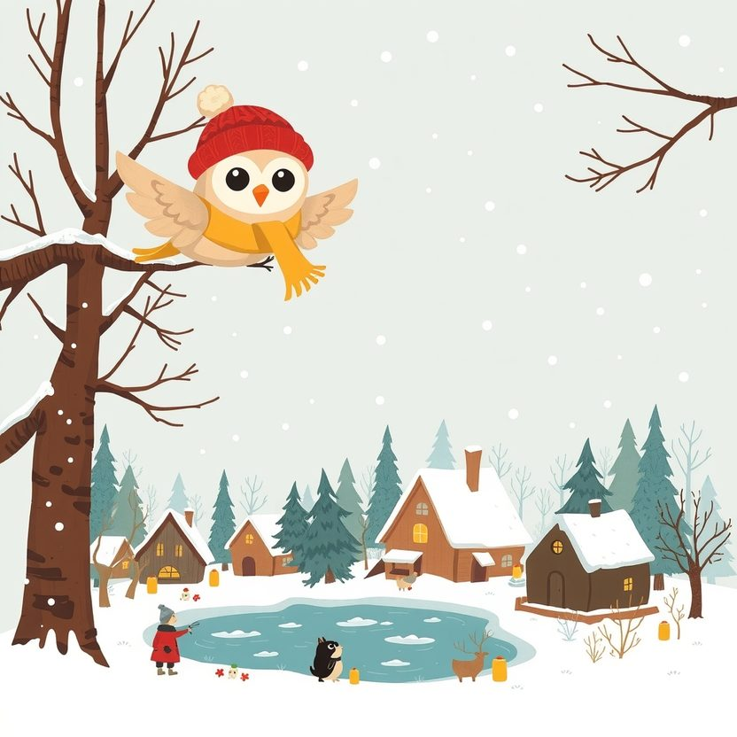

Titistoire › Les Étoiles (3-6 ans)
Plume et la fenêtre sans lumière
Une histoire de Plume la chouette pour parler de : penser à ceux qui sont seuls.

▶ Écouter et regarder l'histoire
Gratuit, sans inscription : la voix lit, le texte suit mot à mot, les images tournent comme dans un album.
Le texte de l'histoire
La veille de Noël, toute la forêt des Quatre-Chênes scintille. Des lanternes se balancent dans les arbres, des bougies veillent aux fenêtres, des guirlandes de houx ornent les portes.
Plume plane au-dessus des toits pour compter les lumières. Cent douze, cent treize… Et là, au bord de l'étang gelé, une maison toute noire. Pas une bougie. Pas une guirlande.
C'est la maison de Monsieur Grognard, le vieux blaireau. « N'y va pas, la prévient Filou en secouant la tête. Il déteste Noël. Il déteste tout le monde. Même moi, il m'a crié dessus pour une simple boule de neige. »
Mais Plume a un pourquoi qui la démange. « Et pourquoi ? Pourquoi quelqu'un détesterait-il Noël ? » Elle se pose sur le paillasson, et elle frappe. Toc, toc.
La porte s'entrouvre d'un doigt. Un œil luit derrière des lunettes. « Pas de chansons ! Pas de biscuits ! Pas de joyeux ceci-cela ! Du balai ! » Et vlan. Plume en sursaute, tout ébouriffée.
Songeuse, elle reste sur le paillasson. Derrière lui, sur la cheminée, elle a eu le temps d'apercevoir quelque chose. Un cadre. Avec deux blaireaux dedans.
Plume sait bien qu'on ne doit pas regarder par les fenêtres. Elle regarde quand même. Juste un petit peu.
Monsieur Grognard est assis dans son fauteuil, immobile, les pattes sur les genoux. En face de lui, un second fauteuil, vide, où repose un tricot. Il ne lit pas. Il ne fait rien. Il contemple le cadre.
Alors Plume comprend. Il ne déteste pas Noël. Noël lui rappelle quelqu'un qui n'est plus là. Et crier, c'est plus facile que pleurer.
Elle raconte tout à ses amis. « On va lui chanter une chanson sous sa fenêtre ! s'écrie Rosie. Très fort ! » « Et on lui apporte un gâteau énorme ! » renchérit Nestor.
Plume secoue doucement la tête. « Il a dit : pas de chansons, pas de biscuits. Il faut l'écouter. » Elle ferme les yeux et réfléchit longtemps. Les meilleures idées de Plume sont souvent toutes petites.
Elle choisit une lanterne. Une seule. Elle l'allume, puis va la déposer sur le rebord de la fenêtre noire. Sans frapper. Sans un mot. Et elle s'éloigne dans la neige.
Cachée derrière un sapin, elle guette. La porte s'ouvre. Monsieur Grognard découvre la lanterne. Il grogne, scrute à gauche, à droite. Personne.
Il gonfle les joues pour la souffler… et s'arrête. La petite flamme danse dans ses lunettes. Alors il reste là un long moment, dans le froid, à la regarder trembloter.
Puis il la prend, avec mille précautions, et il la rentre chez lui. Par la fenêtre, Plume le voit la poser sur la cheminée. Juste à côté du cadre.
Le soir de Noël, Plume revient. Cette fois, la porte s'ouvre avant même qu'elle ait frappé. « C'est toi, la lanterne. » « Oui, monsieur. » « Hmpf. Tu vas attraper froid, bougonne-t-il. Entre. Mais pas de chansons. »
À l'intérieur, ça sent la poussière et la tisane. Monsieur Grognard lui en verse une tasse fumante. Ils ne parlent pas. Plume sait très bien ne rien dire. C'est même sa spécialité.
Au bout d'un moment, c'est lui qui parle. « Elle s'appelait Hortense. Elle mettait des bougies partout. Jusque dans la baignoire. » Et il rit, un petit rire tout rouillé, qui n'avait pas servi depuis longtemps.
Il se lève et soulève le couvercle d'un vieux coffre. Dedans dorment des dizaines de bougies, et une guirlande de houx toute desséchée. « Elle aurait dit que ma maison fait peur aux étoiles. »
Ensemble, ils allument les bougies. Une à chaque fenêtre. Une sur chaque marche de l'escalier. Et une dans la baignoire, bien sûr, parce que c'est la tradition.
De l'autre côté de l'étang, les habitants de la forêt lèvent le nez. « Regardez ! Chez Monsieur Grognard ! » La glace en est tout illuminée. Cent quatorze lumières. Le compte est bon.
Filou, Rosie et Nestor arrivent sur la pointe des pattes, avec un gâteau de rien du tout. Monsieur Grognard fronce les sourcils. « J'avais prévenu : pas de biscuits. » « C'est un gâteau, monsieur. » « Hmpf. Alors ça va. »
Ils se blottissent près du feu, serrés sur le tapis. Le second fauteuil reste vide, avec son tricot. Personne ne s'y assoit. Mais il a l'air moins seul, avec tout ce petit monde autour.
« Bon, grogne Monsieur Grognard. Une chanson. Une seule. Et pas trop fort. » Ils chantent tout bas, comme on berce. Et à la fin, c'est lui qui réclame : « Encore. »